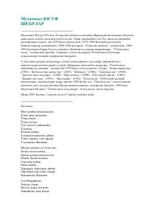

MYMuhammad Yusufning Vatan, ona va muhabbat haqidagi eng sara she'rlari to'plami.
Ushbu to'plamdan O'zbekiston xalq shoiri Muhammad Yusufning eng sara va mashhur she'rlari o'rin olgan. Kitobda shoirning tarjimai holi hamda Vatan, ona tili va muhabbat mavzusidagi samimiy poetik asarlari jamlangan.